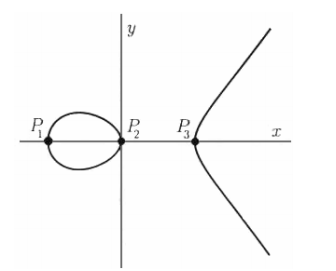
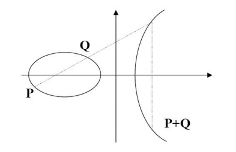
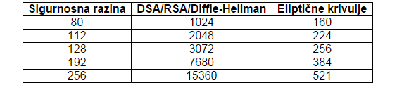
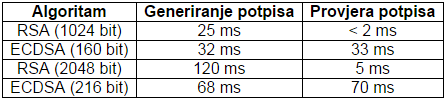

ECC - Elliptic Curve Cryptography
Olga Šimunović
Sadržaj |
Uvod
Kriptografiju odnosno njene algoritme potrebno je u današnje vrijeme konstantno unaprjeđivati kako bi se informacije dobro zaštitile i kako algoritmi ne bi bili razbijeni i time sama sigurnost narušena. U ovom projektom zadatku želja mi je na što bolji način objasniti jednu od vrsta kriptografije koja i nije toliko poznata a njena metoda je zasnovana na eliptičnim krivuljama. U matematici diskretni logaritamski problem eliptičnih krivulja bio je predstavljen 1985. godine od strane N. Koblitza iz tvrtke IBM i V. Millera sa Sveučilišta u Washingtonu. Algoritam koji je nastao na temelju eliptičnih krivulja bio je ECDSA (eng. Elliptic Curve Digital Signature Algorithm). Nastao je kao „nadogradnja“ RSA sustava zbog kraćih ključeva i bržeg generiranja. Oba spomenuta algoritma biti će detaljnije objašnjena u daljnjem tekstu. „Korištenje eliptičnih krivulja osigurava i brže izračune matematičkih operacija, uštede u memoriji i iskorištenju mrežnog linka, a činjenica je da u svom radu više opterećuje poslužitelj nego klijenta te zato postaje idealno za upotrebu na malim uređajima.“ U daljnjem radu objasniti ću svrhu javnog ključa, objasniti kako radi RSA algoritam te ga i na primjeru pokazati, zatim objasniti što su to eliptične krivulje i koja je prednost ECDSA algoritma nad RSA algoritmom. Dolje možete vidjeti primjer eliptične krivulje

{kind=link}
Slika preuzeta iz izvora[1]
Svrha javnog ključa
Kako bi što bolje shvatila i pojasnila u ovom svom projektu što je ECC odnosno kriptografija zasnovana na metodi eliptičnih krivulja početi ću sa objašnjavanjem svrhe javnog ključa. Objašnjavanje ću pojednostaviti tako da uvedem dva prijatelja kriptografije Alice i Boba. Pa tako, pretpostaviti ću da oni žele komunicirati tajnim porukama među sobom, no postoji problem koji se zove Eve. Eve ima pristup svim komunikacijama Alice i Bob, pitanje je mogu li oni komunicirati bez da ih Eve čuje? Ideja javnog ključa se zasniva na tome da Alice i Bob imaju ključ, neki broj ili matematičku proceduru koja može biti aplicirana u poruku sastavljenu od privatnog i javnog ključa. Privatni ključ se ne prenosi nikome dok je javni dostupan svakome uključujući i Evu. Pa tako Alice šalje poruku Bobu koristeći javni ključ kako bi šifrirala informaciju koju šalje bez da se mora brinuti da ju netko „prisluškuje“ a Bob zatim koristi privatni dio svog ključa kako bi dešifrirao informaciju. Ako Alice želi da Bob zna da je poruka koju je on primio od nje autentična ona će staviti svoj potpis prije nego pošalje poruku a Bob će po primitku kako bi znao da je poruka njena primijeniti će lako dostupan javni dio njenog potpisa ono kojeg je primio sa porukom i poslati će na provjeru. Ako Eva našteti povjerljivosti poruke potpis će doći pomiješan te će Bob na temelju toga znati da je poruka korumpirana. Ovim možemo zaključiti da je sigurnost ovog sistema nije uopće na Alice i Bobu koji traže siguran način prijenosa informacija nego na vrlo teškom vraćanju privatnih ključeva koristeći samo javne ključeve. Ovaj problem dovodi do ECC koji nam može dati koristan par ključeva.
RSA
„Algoritam za kriptiranje javnih ključeva idejno je predstavljen 1977. godine od strane Ron Rivesta, Adi Shamira i Len Adlemana s Tehnološkog Instituta Massachusetts (MIT), a 1983. godine je i patentiran.“ [2] RSA (Rivest, Shamir, Adleman) algoritam kao što i vidimo da je ime dobio po svojim tvorcima a on je bio ujedno i prvi algoritam za digitalni potpis i njegovim stvaranjem napravio se veliki napredak za kriptografiju javnog ključa. Danas je ovo najviše upotrebljavan algoritam. Ponovno ću na našim prijateljima kriptografije Bobu i Alice objasniti kako funkcionira RSA algoritam. Proučavajući matematičke činjenice i razmatranjem teorema na kojem se ovaj algoritam temelji cjelokupna shema načina rada RSA izgleda ovako:
Bob izabere neke proste brojeve koje možemo označiti sa p i q te odmah izračunava n = p∙q uz uvjet da je p ≠ q. Iz teorema koji sam razmatrala vidim da je ϕ (n) = (p − 1)•(q − 1) zbog ovog iskaza postavimo da je 1< d < ϕ (n) te Bob izabere jedan broj d koji je uzajamno prost sa ϕ (n). Bob na kraju računa ε, (1 < ε < ϕ (n)), uz uvjet d • ε ≡ 1(mod ϕ (n)). Ovo se računa pomoću Euklidovog algoritma Bobovi javni ključevi su n i ε te ih on objavi kako bi drugi znali kako uspostaviti komunikaciju sa Bobom. Zatim važno je da Bob objavi i da koristi algoritam RSA (kako bi drugi znali u ovom slučaju Alice na temelju kojeg algoritma komunicirati). Njegov tajni ključ predstavlja d koji samo on zna. Ako Alice želi poslati Bobu poruku mora izračunati M^ε mod n , to znam iz teorema koji sam proučila a kako izračunati tako da Alice izračuna neke od M npr. M^2,M^4,M^8… te ih zatim pomnožiti kako bi dobili neki M^ε. Kada Bob želi dekodirati poruku od Alice ponovo koristeći teorem saznajem da treba izračunati C^d mod n. Ako Eve koju sam prije navela kao nekoga tko želi prisluškivati razgovor rastavi javni ključ n na proste faktore odnosno da sazna p i q.
Primjer RSA algoritma
Primjer RSA algoritma ću napraviti tako da pošaljem neku poruku, pa slijedi:
Šaljem poruku: I AM OLGA
Zadam da su mi p = 47, q= 59,
pa izračunam n = p • q = 47 • 59 = 2773,
te dobijem dalje
ϕ (n) = (p − 1) • (q − 1) = 46 • 58 = 2668 i odredim d = 157 a ε = 17
Za svako slovo odredim da je: blanko = 00, A=01, B= 02,… Z=26
Poruka glasi
I AM OLGA pa tako primjenim za svako slovo njegovu vrijednost
0900 0113 0015 1207 0100
Sada kodiram blokove redom C = M^ε mod n = 〖900〗^17 mod 2773= 1510 Na ovaj način izračunam za svaki blok ( ja sam to radila koristeći kalkulator) i tako kodirane podatke šaljem u nizu preko računalne mreže.
Provjerim i dekodiranje 〖1510〗^157 mod 2773 = 900 vidim da vrijedi.
Važno je napomenuti da osim RSA algoritma postoje i druge metode kriptiranja kao što su DSA, DES, AES, IDEA i druge.
Eliptične krivulje
Glavni razlog za uvođenje ovih krivulja u kriptografiji je veća sigurnost sa manjim brojem ključeva odnosno problem diskretnog logaritma u grupi E (Fp) je teži problem nego diskretni logaritam u grupi F∙p. Prvo što ću objasniti su eliptične krivulje kako bi što lakše objasnila kriptografiju koja se temelji na njima. „Ono što čini eliptičnu krivulju prikladnom za upotrebu u kriptografiji je njeno matematičko svojstvo koje kaže da ako se odaberu dvije različite točke na krivulji, tada pravac koji ih spaja presijeca krivulju u trećoj točki. Ako se ta točka reflektira na x-os dobiva se još jedna točka (krivulja je simetrična u odnosu na x-os). Pod uvjetom da su poznate točke P i Q, moguće je naći točku refleksije, koja je na slici označena kao P + Q. Pokazalo se da P + Q zadovoljava najčešća matematička svojstva koja se pojavljuju uz cijele brojeve, pod uvjetom da je definirana točka beskonačnosti, što je u slučaju cijelih brojeva 0.“

{kind=link}
Slika preuzeta iz izvora [3]
Primjena Eliptičnih krivulja
Eliptične krivulje koriste mnogi kriptosustavi neki od njih su:
EC ElGamalov kriptosustav (eng. Elliptic Curve ElGamal encription)
Menze - Vanstoneov kriptosustav i ECES (eng. Elliptic Curve Encryption System)
Demytkov kriptosustav
KMOV kriptosustav
Kuwokado – Koyama kriptosustav
Digitalni potpis
Glavna svrha digitalnog potpisa je zaštita podataka osobe i komunikacije od neovlaštenih upada i narušavanja identiteta korisnika. Digitalni potpis koristi tajni i javni ključ, pa tako imamo četiri koraka u komunikaciji Bob i Alice sa digitalnim potpisima istih. Kako već spomenuti Bob ne bi primio poruku „Ovo ti šalje Alice“ koju zapravo šalje Eve postoje digitalni potpisi kako bi primatelj poruke bio siguran da poruku upravo šalje onaj koji ju i piše. Na poruku M koju je primila, Alice prvo mora primijeniti funkciju za dekriptiranje te zatim dobiva S odnosno potpisani oblik poruke. Iduće što mora učiti je kodirati S tako da koristi Bobov ključ te osim postupkom dobije C koji šalje na računalnu mrežu. U ovom koraku C stigne do Boba, te sada on obavi dekriptiranje sa svojim ključem i tako odredi S, Bob na kraju na S primjeni enkripciju te dobije M i može pročitati poruku od Alice.
ECDSA algoritam
ECDSA (Digitalni algoritam potpisa eliptične krivulje) nastao je kao opcija RSA algoritmu. 1999. godine prihvaćen je kao dio ANSI standarda, a 2000. Godine je prihvaćen kao dio IEEE i NIST standarda. Jedan je od algoritama u kojima se koristi kriptografija temeljena na eliptičkim krivuljama. Njegove prednosti kao što kraći ključevi i brže generiranje istih svakako pridonose da ECC omogućava lakši, jednostavniji ali i sigurniji algoritam. Kao što sam već navela citatom u uvodu „Korištenje eliptičnih krivulja osigurava i brže izračune matematičkih operacija, uštede u memoriji i iskorištenju mrežnog linka, a činjenica je da u svom radu više opterećuje poslužitelj nego klijenta te zato postaje idealno za upotrebu na malim uređajima.“ Kraći ključevi znače jednaku sigurnost primjerice 160 (210) bitni ECC i RSA 1024 (2048) bitni ključ imaju jednaku razinu sigurnosti za podatke koji se prenose. Kao što možemo vidjeti u donjoj tablici veličine ključeva u bitovima uspoređujući kriptosustave pa tako vidimo da kod 192 bitnog simetričnog AES ključa isto tako potrebno koristiti 7680 ključ RSA a dok kod algoritama koji koriste eliptične krivulje dovoljno je koristiti 384 bitni ključ za istu razinu sigurnosti.

{kind=link}
Slika preuzeta iz izvora [4]
Algoritam ću pojasniti ponovno pomoću Alice i Boba
„E je eliptička krivulja nad Fp, a P je točka prostog reda n na E(). Svaki korisnik napravi sljedeće:
1. ECDSA Generiranje ključeva. a) Izabere slučajan broj d iz skupa {1, ... , n - 1}; b) Izračuna Q = [d] P; c) Q je javni, a d privatni ključ.
2. ECDSA Generiranje potpisa.
Kad želi potpisati poruku m, Alice radi sljedeće: a) Izabere slučajan broj k iz skupa {1, ... , n - 1}; b) Izračuna [k] P = (x1, y1) i r = x1 mod n. Ako je r = 0, onda se vrati na korak a); c) Izračuna k-1 mod n; d) Izračuna s = k-1(H(m) + dr) mod n, gdje je H hash funkcija. Ako je s = 0, onda se vrati na korak a); e) Potpis poruke m je uređeni par prirodnih brojeva (r, s).
3. ECDSA Verifikacija potpisa.
Da bi verificirao Alicein potpis (r, s) poruke m, Bob treba napraviti sljedeće: a) Dobiti Alicein javni ključ Q; b) Provjeriti da su r i s cijeli brojevi iz skupa {1, ... , n - 1}; c) Izračunati w = s-1 mod n i H(m); d) Izračunati u1 = H(m)w mod n i u2 = rw mod n; e) Izračunati [u1] P + [u2] Q = (x0, y0) i v = x0 mod n; f) Prihvatiti potpis kao vjerodostojan ako i samo ako je v = r. Uvjet r!=0 osigurava da se u potpisivanju stvarno koristi Alicein tajni ključ d, dok se uvjet s!=0 pojavljuje zbog koraka 3.c) .“
Opis algoritma preuzet iz izvora [5]
Ed25519
Karakteristike ovih krivulja su: Brza potvrda potpisom Još brža verifikacija Brzo potpisivanje Brzo generiranje ključeva Visoki stupanj sigurnosti Sigurni i mali ključevi (samo 32 bajta) Mali potpisi (stanu u 64 bajta)
ECPSV
(engl. Elliptic Curve Pintsov Vanstone Signatures) algoritam koji se temelji na eliptičnim krivuljama te se koristi za digitalni potpis. Koristi se kako bi omogućio stupanj sigurnosti tako što omogući dio poruke da bude „skriven“ u jednom od poruka koje budu primljene. Postoje tako i drugi algoritmi temeljeni na eliptičnim krivuljama kao što su ECNR (engl. Elliptic Curve Nyberg Rueppel) za digitalni potpis, ECMQV (engl. Elliptic Curve Menezes-Qu-Vanstone) služi za razmjenu ključa te umjesto prirodnih brojeva koristi eliptične krivulje. Te ECIES (engl. Elliptic Curve Integrated Encryption Scheme) za asimetrično kriptiranje je shema koja se temelji na eliptičnim krivuljama.
NIST prime eliptične krivulje
Postoje P-192, P-224, P-256, P-384, P-521 Nist linije. Analizirajući ECC krivulje možemo doći do zaključka da nisu sve krivulje ECC jednako upotrebljive i korisne. Postoje tako linije koje su preporučene za upotrebu u praksi radi sigurnosti a preporučuju ih neke od institucija koje istražuju ovu domenu a to su ANSI (American National Standards Institute) i NIST ( National Institute of Standards and Technology) . Pa tako Elliptic Prime Curve 256 bit – P-256 i Elliptic Prime Curve 521 bit – P-521 su od strane svih instituta preporučljive i zadovoljavaju sve standarde protokola.
Zašto koristiti ECC
ECC kriptografski sustavi imaju prednost u odnosu na druge kriptografske sustave veću sigurnost po bitu, za rad im je potrebna manja količina memorije i sa računske strane nisu toliko zahtjevni, primjenjivi su na male uređaje (koji imaju ograničenje što se memorije tiče) pa ih se sve više koristi kod pametnih kartica, u elektroničkom poslovanju i u mobilnim uređajima. Postavlja se pitanje zbog svih prednosti koje imaju ove krivulje odnosno kriptosustavi zasnovani na njima zašto nisu u većoj upotrebi u današnje vrijeme. Naravno uz sve prednosti koje ECC ima postoje i negativne strane a to je sporija provjera potpisa te sporije generiranje ključa. Pa tako vidimo u tablici ispod kod ECDSA algoritma da je provjera potpisa puno duža nego kod RSA algoritma. Stoga je RSA algoritam prikladniji za sustave gdje ima puno računala koji obavljaju komunikaciju sa glavnim računalom te je potrebno provjeriti potpise u što kraćem vremenskom periodu.

{kind=link}
Slika preuzeta iz izvora [6]
Zaključak
Sustavi kriptografije koji se temelje na eliptičnim krivuljama jedna su od opcija za RSA algoritam. Prednosti koje sam navela za ECC i malena potrošnja energije sigurno predstavljaju i potencijalnu zamjenu RSA algoritma. Također algoritmi koji se temelje na eliptičnim krivuljama imaju sigurnije parametre od javnih ključeva RSA i Diffie-Hellman algoritama. Uz prednosti koje ECC ima postoje i nedostaci, kao što su teškoća generiranja ključeva, sporije potvrde potpisa te nekompatibilnosti implementacije. Mogu reći na temelju svega što sam do sada proučila u vezi prednosti i nedostataka kriptografskih sustava koji se temelje na eliptičnim krivuljama još nisu zastupljeni u velikoj mjeri pogotovo uspoređujući sa RSA te kako je više onih pozitivnih strana pretpostavljam da će se isti sve više koristiti u budućnosti. Prednost je i svakako kompleksnost kriptografije koja se temelji na eliptičnim krivuljama te je teže probiti ključeve napadačima.
Literatura
1. http://gen.lib.rus.ec/search.php?req=elliptic+curve+cryptography&lg_topic=libgen&open=0&view=simple&phrase=1&column=def/ 2. https://eprint.iacr.org/2013/734.pdf/ 3. https//math.boisestate.edu/~liljanab/MATH508/GuideEllipticCurveCryptography.PDF/ 4. https://www.math.hmc.edu/~ursula/teaching/math189/finalpapers/elaine.pdf/ 5. http://www.cert.hr/sites/default/files/CCERT-PUBDOC-2006-09-169.pdf/ 6. http://www.cis.hr/www.edicija/Koritenjeeliptinihkrivuljaukriptografiji.html/ 7. http://www.johannes-bauer.com/compsci/ecc/#anchor14/ 8. http://www.pmf.ni.ac.rs/pmf/predmeti/7011/doc/DODATAK%20PREDAVANJE7-RSA.pdf/ 9. https://web.math.pmf.unizg.hr/~duje/elkript/elkripto2.pdf/ 10.http://sigurnost.zemris.fer.hr/algoritmi/asimetricni/2014_kolar/EllipticCurveCryptography_AnaKolar.html/ 11.http://sigurnost.zemris.fer.hr/algoritmi/hash/2005_dukic/ecdsa.html/